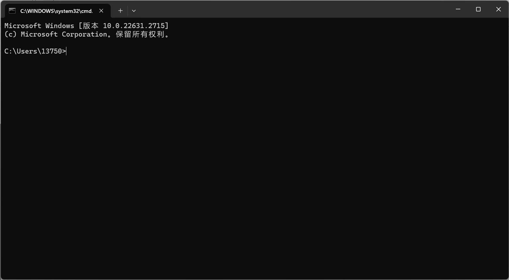

AL

可能在学习中有许多的困难，慢慢走过去就好啦！
这个
重要的事情！！！
更新不及时的话嘞，可以在这里踢一下
如果有哪些部分的 疑问 or 有一些问题但还没有更新到的可以在这里提交~
这里的大部分内容是不会手把手一摸一样告诉大家的，写程序嘛，学习电脑知识是要学会自己探索的！
比如遇到了困难，遇到了bug，遇到了不知道什么情况的困难，最最可靠的还是看这篇笔记的你 (后面会讨论一下遇到了这些情况我们应该怎么去自己解决~)
目录
以后补
前言
学程序不仅仅学学怎么写程序，还有其他的内容
例如怎么用一些比较简单的命令行，写一些简单的脚本
还有环境变量呀，还有一些基本工具和一些常见问题的解决方案
那现在呢目前的规划是
一些基本的小知识
一些命令行/工具的基本使用方法
Python的一些心得
基础
网络通讯
一些更厉害的一些姿势
多线程(其实是微线程，以后讲)&多进程
CAPI
其他等等
第三方库
然后就是更厉害的啦
Python算法初步
当然肯定不止仅有Python，还有C/C++
其他的暂时还没有，慢慢来先
不过看到网上好多人很厉害的样子，我也想学那样炫酷的操作
这个放在后头一点，看完了基本操作，我们可以试着在计算机的世界里，看看不一样的风景
虚拟机
双系统
一些拿来
装的工具还有怎么开始尝试自己写一个大一点的软件
接着呢，我们即将要推开计算机的大门，在大门外面，有两个大大的图案

可能已经发现了这是两个操作系统，一个是 Windows，一个是Linux
是的你已经发现啦，这把我的苹果，也就是MacOS。其实我并没有省略掉它，所以让我们现在来认识一下这些系统
Windows
这个大家都很熟悉，就是市场占有率最最最高的系统，这个就不做多介绍了
UNIX & Linux
这个并不在计算机的大门上，可是我还是写在这里了，如果时光倒退，Linux现在的位置其实是这个系统的，也就是UNIX
可是为什么它现在落寞了呢(bushi) 这就要简单的介绍一下Linux的由来
上个世纪呢，苹果，微软，UNIX三家独大，他们有一个共同特性，就是 要钱！！！
那LInux这个人呢，就不干了，手撸了一个系统，取名为Linux，是的，这就是Linux操作系统的由来
那么，苹果电脑的MacOS呢，就是基于UNIX开发的，所以它算是UNIX的一个衍生版
那现在Linux和UNIX是什么关系嘞
从某种角度来说，UNIX就是Linux(说的不对但不要骂我)
(这一部分以后还会讲到)
PS:
那可能有人会问我还听过一下操作系统，Ubuntu, Kali等，他们算什么？
他们都是Ubuntu的衍生版，何为衍生版，可以理解为孩子和父母的关系
诚然Linux是一个操作系统，不过单一个Linux和Windows比较还是有一点简陋，
比如没有图形化的界面，只能对着黑乎乎的窗口，那衍生版，就是给Linux穿上好看
的衣服，让它的一些功能能让我们更直观简便的利用，这就是衍生版主要的作用。
以后补
一些会遇到的词
会慢慢慢慢的更新，因为有好多好多词语可能会遇到，不过这里这里罗列一些
我认为现阶段比较常用的词语
命令行
就是一个黑乎乎的窗口
可以在里面完成许多和系统有关的命令，and和它的升级版Powershell(以后会讲)

包管理器
我们知道我们手机上下载软件，可以应用商店，可以去网络上下载。而在电脑上下载软件，不同的系统也有对应的软件商城或者直接去网络上下载。去网络上下载，有的软件十分的方便，有的软件找来找去都找不到正版或者是官网。
那么，包管理器，闪亮登场，
包可以理解为软件的意思。这个包管理器，就是提供了一个类似于应用商城的功能。下载/更新/卸载软件更方便啦！
源 & 镜像
可以想象成不能外借的图书馆，这个图书馆虽然不能外借，但是我们可以一张一张的记下来。
当我们需要某本书的时候就从这个源
拉取，也就是拍照的过程。但是呢我们会发现，有的时候这个图书馆离我们比较远，可能它在大洋彼岸，我们在中国，那我们跑过去跑回来就特别特别慢了。此刻，让我们就以崇高的敬意，感谢国内的
各大镜像源提供商。顾名思义，就是一个魔镜，它在国内，通过它我们可以更快的获取我们需要的东西。
那其实呢，是这些提供商，已经帮我们把这些所谓书都抄了一遍，所以就会快许多
那么下面罗列几个国内的部分镜像网站(
首推清华)
以后补
一些小工具
这个是一个Window下的包管理器
以后补
一些准备
磨刀不误砍柴工
所以一个优雅且好用的工具很重要，这里仅仅做一些介绍，具体的详细内容嘞放在一些基本操作啦

以后补